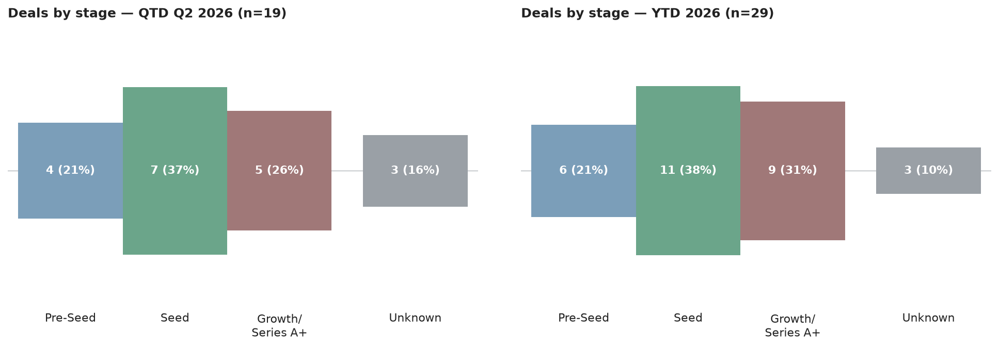
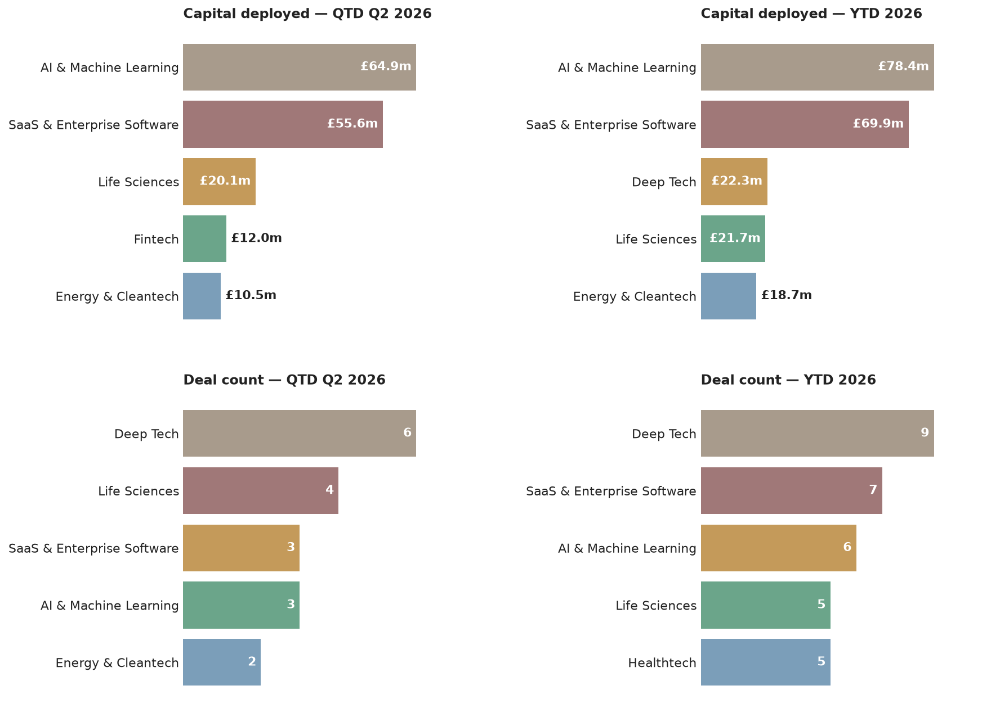

A weekly intelligence briefing monitoring public news coverage for venture capital investment activity in Scottish startups and scaleups — tracking who's investing, at what stages, in which sectors, and with what cadence.
This is an automated newsletter, written by Claude, based on news coverage scraped from 32 websites.
This is the first issue, so here's where things stand: Q2 2026 has seen 19 deals worth £107.5m, with the year to date at 29 deals worth £141.6m.


Tricapital is the most active investor by deal count this quarter with 4 (its angel syndicate backed HonuWorx, Kaly and Sisaltech in a single announcement), followed by Scottish Enterprise Investment Fund with 3 and a tie between Maven Capital Partners and STAC Invest at 2 each. By capital, Index Ventures and Highland Europe are tied at the top with £51.9m each — both backed Wordsmith AI's Series B — ahead of Scottish Enterprise Investment Fund's £22.5m spread across three deals. Seed is the dominant stage this quarter, with Growth-stage deals (mostly Tricapital's smaller angel cheques) close behind Pre-Seed. AI & Machine Learning and SaaS & Enterprise Software lead on capital deployed, driven largely by the Wordsmith AI and Aveni rounds, while Deep Tech leads on deal count thanks to Tricapital's multi-company angel cheques — a split worth noting, since the biggest-money sectors aren't the most active ones by number of deals. Edinburgh accounts for the largest share of deals by location, with Glasgow and the rest of Scotland trailing some way behind.
Lead investor: Highland Europe · Co-investors: Index Ventures · Sector: AI & Machine Learning, SaaS & Enterprise Software · Location: Edinburgh
Wordsmith is an Edinburgh-based legal AI startup building an operations platform for in-house legal teams. The round, announced as €60.2m ($70m), brings the company's total funding to €86m ($100m) and was led by Highland Europe with participation from Index Ventures. Wordsmith says it's now used by more than 500 companies, including BT, the Financial Times, Safelite, Trip.com and Canva.
Source: eu-startups.com (https://www.eu-startups.com/2026/06/edinburgh-based-wordsmith-raises-e60-2-million-series-b-to-scale-legal-ai-platform-for-in-house-teams/)
Lead investor: PXN Ventures · Co-investors: Puma Growth Partners, Lloyds Banking Group, Nationwide, Scottish Enterprise Investment Fund · Sector: Fintech, AI & Machine Learning · Location: Edinburgh
Aveni, a University of Edinburgh spinout building AI tools for wealth management, financial advice and banking, raised £12m led by PXN Ventures, with existing backers Puma Growth Partners, Lloyds Banking Group, Nationwide and Scottish Enterprise all returning. The funding will go toward Aveni's Unified Assurance Platform and two new products, Agent Assure and Agent Approve. Two high-street banks backing the same round is a notable detail for a company still at growth stage rather than a later round.
Source: scottishfinancialreview.com (https://scottishfinancialreview.com/2026/06/04/aveni-edinburgh-ai-wealth-startup-raises-12m/)
Both deals surfacing this week were old news by the time we found them — Swurf's £200k round closed in March and Esk's £2.6m round in May. Neither reflects a current lull in deal activity; see The Numbers above for the actual run-rate this quarter.